What TRT does
TinyRedactionTool (TRT for short) hides private details in pictures and videos before you share them. You draw a shape over a name, a face, a number plate or a card number, and TRT covers it with a black box, a blur or pixels. Then you save a new copy. Your original file is never changed.
TRT can also take screenshots, record the screen, and add notes such as arrows and text.
Starting TRT
Double-click TinyRedactionTool. A small capture bar appears at the top of the screen, and the TRT icon appears in the notification area (the small icons by the clock).
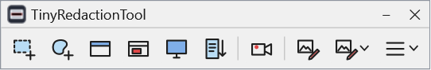
- To open the editor, click on the capture bar, or double-click the TRT icon by the clock.
- To open a file straight away, drag it onto the editor, or right-click it in File Explorer and choose Open with TRT (if you turned this on in Settings).
- TRT keeps running by the clock until you quit. To quit, right-click the TRT icon by the clock and choose Quit TinyRedactionTool.
Your first redaction (in 6 steps)
- Open the editor and click
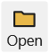
Open. Choose a picture. - Check that
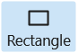
Rectangle and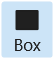
Box are pressed (they are when TRT starts). - Drag over the thing you want to hide. A black box appears over it.
- A small window appears under the box. Click Redact (or just click somewhere else on the picture).
- Do the same for everything else you want to hide.
- Click Export and choose a name for the new file. TRT saves it and checks it. That new file is the one to share.
The editor at a glance
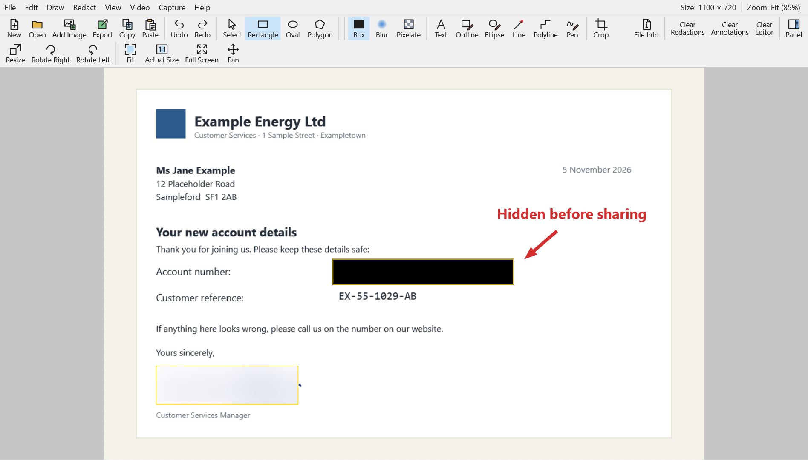
1 2 3 4| # | Part | What it is for |
|---|---|---|
| 1 | Menu bar | Every command, in words: File, Edit, Draw, Redact, View, Video, Capture and Help. |
| 2 | Toolbar | The buttons you use most. You can choose which buttons it shows in Settings. |
| 3 | Workspace | The grey area around your picture. |
| 4 | Your picture | Draw on it to hide things or add notes. |
Short messages appear at the bottom of the picture now and then, for example "PNG export validated". They fade away by themselves.
The
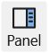
Panel button (top right) opens a side panel. It lists your redactions and notes, and it has the Export Options.The editor opens the way you last closed it: filling the screen, or in a window of the same size and place. The first time, it fills the screen.
The editor can be light or dark. Choose in Settings › General › Theme, or in View › Theme.
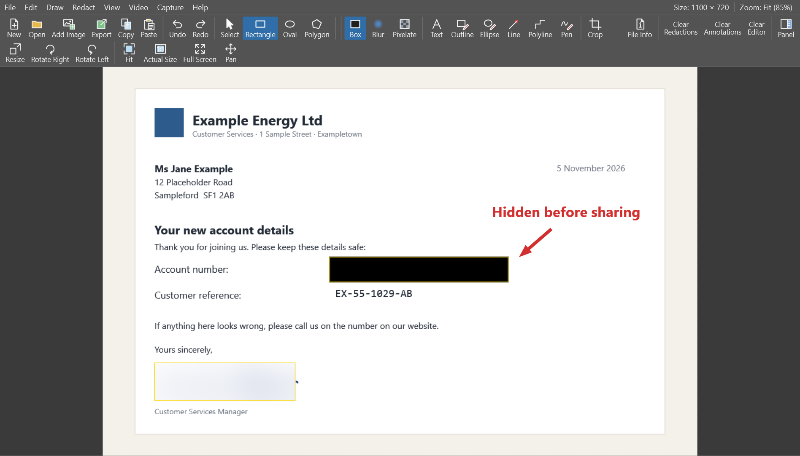
Opening pictures and videos
- Open (or File › Open Media…) opens a picture or a video.
- You can also drag a file from File Explorer and drop it on the editor.
- TRT opens most picture types (PNG, JPG, GIF, WebP, BMP, TIFF, HEIC and more) and most video types (MP4, MOV, AVI, MKV, WebM and more).
- While a file is open, TRT holds it so it can't be changed by accident.
If you open a file from a network drive, TRT asks first, because the file has not been redacted yet.
Hiding things: redactions
A redaction is a shape that hides part of the picture. You choose the shape and the effect.
1. Choose a shape
| Rectangle | Drag from one corner to the other. Hold Shift for a square. |
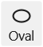 Oval | Drag, the same way as a rectangle. Good for faces. Hold Shift for a circle. |
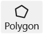 Polygon | Click once at each corner of the area. To finish, click the first corner again, double-click, right-click, or press Enter. Hold Shift to keep lines straight or at 45°. |
2. Choose an effect
| Box | Covers the area with a solid colour (black unless you choose another). This is the safest choice: nothing underneath can show through. |
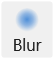 Blur | Makes the area soft and fuzzy. It looks nicer, but large text or shapes may still be guessed. |
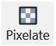 Pixelate | Turns the area into big squares. Like blur, it hides detail but not always everything. |
3. The small window under a redaction
When you draw or select a redaction, a small window appears under it:
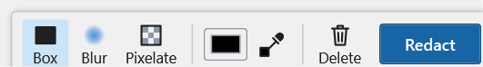
- Box, Blur and Pixelate change the effect of this redaction.
- The colour square chooses the box colour. picks a colour from the picture itself, so the box blends in.
- For Blur and Pixelate you also get Default or Aggressive, and a Strength from 1 to 10.
- Delete removes this redaction.
- Redact accepts it. Clicking anywhere else does the same.
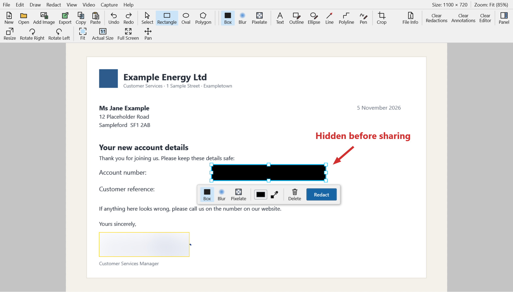
Clearing
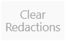
Clear Redactions removes every redaction (the picture and notes stay).- Clear Annotations removes every note.
- Clear Editor closes the picture and everything on it.
- Made a mistake?
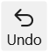
Undo (Ctrl+Z) brings it back, and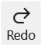
Redo (Ctrl+Y) repeats it.
Selecting, moving and changing shapes
Click
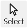
Select, then:- Select a shape: click it. Small squares appear on its edges.
- Move it: drag it. To move it a little at a time, press the arrow keys (Shift with an arrow moves it further).
- Resize it: drag one of the small squares.
- Turn it: move the pointer just outside a corner until it becomes a curved arrow, then drag.
- Select several: drag a box around them on an empty part of the picture. Move them together, or delete them together.
- Delete the selected shape: press Delete.
Adding notes: annotations
Annotations are notes on top of the picture: text, outlines, arrows and drawing. They don't hide anything. They point things out.
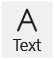 Text | Drag a box, then type. Press Enter for a new line and Ctrl+Enter when you've finished. Double-click a text later to change it. |
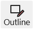 Outline | An empty rectangle, to draw attention to something. |
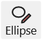 Ellipse | An empty oval or circle. |
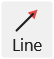 Line | A straight line. It has an arrowhead at the end unless you change it. |
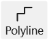 Polyline | A line that turns corners at right angles as you drag. |
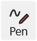 Pen | Draw freely, like a pen on paper. |
When you select a line or a text, a small window lets you change its colour, width, dashes, arrowheads, font and size. The same choices are on the options bar under the toolbar. The options bar is hidden at first; switch it on in Settings › Editor.
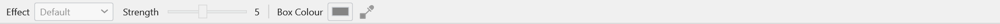
Adding images and new images
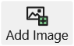
Add Image puts another picture on top of the open one (for example a logo). You can move it, resize it and turn it like any shape.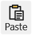
Paste (Ctrl+V) opens a picture from the clipboard. Edit › Paste onto Image (Ctrl+Shift+V) puts it on top of the open picture instead.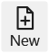
New (Ctrl+N) makes a blank picture to draw on. Choose a size and a background colour. It can start with the current picture already on it.
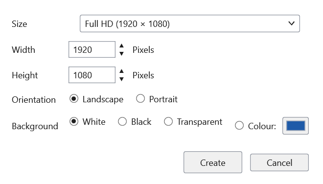
Crop, resize, rotate and flip
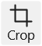 Crop | Drag the area to keep, then click Confirm Crop (or press Enter). Cancel Crop stops. You can remove the crop later with Draw › Remove Crop. |
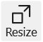 Resize | Makes the picture bigger or smaller. Your shapes and notes are resized with it. |
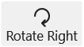 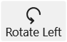 Rotate | Turns the whole picture or video a quarter turn right or left. |
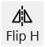 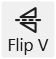 Flip | Mirrors the picture (in Edit › Rotate Image or Video; the buttons are hidden at first). |
To turn or flip only the selected shapes instead of the whole picture, use Edit › Transform.
Zoom, full screen and slideshow
| Mouse wheel | Zooms in and out where the pointer is. |
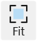 Fit | Shows the whole picture. |
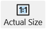 Actual Size | Shows the picture at 100%, one screen dot per picture dot. |
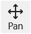 Pan | Drag to move around a zoomed-in picture. You can also hold Space and drag, or drag with the middle mouse button. |
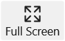 Full Screen | Hides everything but the picture (F11; press it again to come back). |
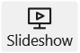 Slideshow | Shows the pictures in the same folder one after another (F5; Esc ends it). |
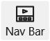 Nav Bar | Shows small pictures of the folder along the bottom. Click one to open it. Drag the top edge of the bar to make it taller or shorter. TRT remembers the height. |
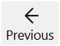 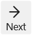 Previous / Next | Opens the previous or next picture in the same folder (Page Up / Page Down). |
Animated GIFs
Animated GIFs play by themselves when you open them.
- To pause or play: click Select, then click the picture (away from any shape).
- Your redactions and notes are on every frame. Pause on a few frames to check that the boxes still cover what moves.
- Export as GIF keeps the animation, with the redactions on every frame. Exporting as PNG, JPG or WebP saves only the frame you are looking at.
Redacting a video
When a video is open, a timeline and play buttons appear at the bottom.
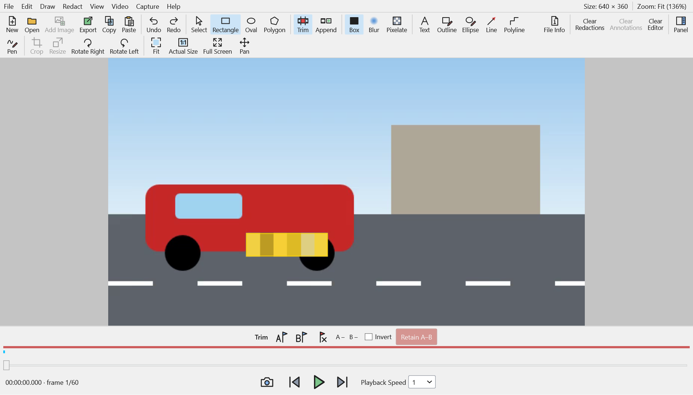
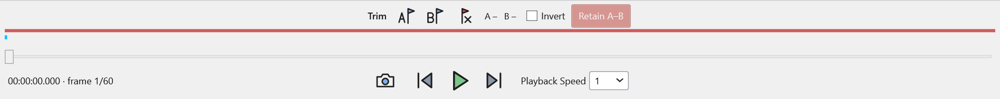
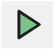 Play / Pause | Plays or pauses the video. |
| Frame by frame | One picture back or forward (or press ← and →). |
| Timeline | Drag along it to jump to another moment. Point at it to see a small preview. |
Hiding something that moves
- Pause on the first moment the thing appears (a face, a number plate…).
- Draw a shape over it, and choose Box, Blur or Pixelate in the small window.
- Click Start Redaction. TRT tracks the thing: it moves the box along with it, frame by frame.
- If TRT loses track, it stops and shows you where. Choose Continue Redaction, End Redaction Here or adjust the box yourself.
- Play the video through and watch the box. If it drifts, pause, move the box back and click Track Again.
Hiding something that stays still
For something that doesn't move (a name in a corner, a sign), tick Enable Manual Redaction in the small window before clicking Start Redaction. The box stays where you drew it. Play to the moment it should end, click the box and choose Stop Redaction.
The coloured lines
Each redaction and note has a coloured line above the timeline, showing when it is on screen. Point at a line to see what it is.
| Colour | Meaning |
|---|---|
| Red | A redaction is on screen. |
| Cyan | A box position you placed. |
| Green | TRT tracked the subject here. |
| Orange-red | Tracking lost the subject here. Check this part. |
| Violet | A note (annotation) is on screen. |
Sound is removed when you export a video, because TRT can't check or redact what is said. If you need to keep it, see Export.
Trim, append and capture frame
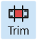 Trim | Shows the trim row. Go to the first frame you want and click (Set A), then to the last and click 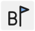 (Set B). Retain A–B keeps only that part. Tick Invert to delete that part and keep the rest.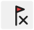 clears the marks. |
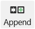 Append | Adds another video at the beginning or the end of this one. |
| Capture Frame | Saves, copies or opens the frame on screen as a picture. |
These are also in the Video menu. Undo takes back a trim or an append.
Export: saving the result
Click Export (or File › Export…), choose where to save and a file name, and click Save.
- Pictures can be saved as PNG, JPG, GIF or WebP. PNG keeps the best quality.
- Videos can be saved as MP4, MOV, M4V, AVI, MKV or WebM. MP4 works almost everywhere.
- TRT checks the new file after saving it, to make sure the redactions are really in it. If anything is wrong, it doesn't keep the file.
- Hidden details inside the file (such as where a photo was taken) are not copied into the new file.
- TRT never replaces an existing file, and never changes your original.
Export Options (in the side panel)
Click Panel and open Export Options:
- High, Normal or Smaller: better quality, or a smaller file.
- Keep Primary Audio (Unredacted): keeps the video's sound. TRT asks you to confirm, because the sound is not checked.
- Securely Delete the Original After Export: after a successful export, TRT asks once more, then overwrites the original file and deletes it. This can't be undone.
Copy, projects and other ways to save
| Copy | Copies the picture with its redactions (Ctrl+C), ready to paste into an email or document. |
| Save Project | Saves your shapes and notes so you can carry on later. The project needs the original file to open again. A project is not a redacted file: export to share. |
| Open Project | Opens a saved project. |
| Save Copy | Saves a copy of the file as it is, without redactions (File › Save Media As…). Don't share this copy. |
File Info: what is hidden inside a file
Pictures and videos often carry hidden details: the camera, the date, and sometimes the place where they were taken. Click File Info (Ctrl+I) to see them. Export leaves these details out of the new file.
The capture bar
The capture bar takes screenshots. The screen freezes, you choose what to capture, and the picture opens in the editor, ready to redact.
| Rectangular region: drag a box around part of the screen. | |
| Freehand region: draw around any shape. | |
| Active window: the window in front. | |
| Window or object: point at a window or a part of one (it is outlined in red), then click. | |
| Full screen. | |
| Scrolling window: for a long web page or document. Click the part that scrolls; TRT scrolls it to the end and joins it into one tall picture. Press Esc to stop early. | |
| Screen recorder: records a video of the screen (see below). | |
| Open the editor. | |
| Output: where screenshots go: to the editor, to the clipboard, or straight to a file. You can also include the mouse pointer. | |
| Menu: Open Editor, Open File in Editor, Screen Ruler, Hide in the Notification Area, Remove History, Help, Settings, About and Quit. |
- Ctrl+Print Screen takes a rectangular screenshot at any time.
- The – button on the bar hides it in a thin red tab at the top of the screen. Point at the tab to bring the bar back.
- You can drag the bar anywhere by its title. Drop it on the top edge of a screen and it tucks itself away.
Recording the screen
- Click on the capture bar (or press Ctrl+Shift+Print Screen).
- Choose what to record (an area, a window or the full screen), then click Record.
- A border shows what is recorded, with a small bar to pause or stop. Neither appears in the video.
- Stop the recording. It opens in the editor, ready to redact.
Screen recordings have no sound.
The screen ruler
Screen Ruler (in the capture bar's menu) puts a ruler on the screen to measure things in pixels. Drag it to move it, drag its end to make it longer, and use its buttons to turn it or to measure an area, a distance or an angle. Right-click it for more choices.
Privacy and Remove History
TRT works only on your computer. It doesn't upload files, doesn't phone home, and doesn't keep a list of the files you open.
A few things are kept while TRT runs: screenshots and working copies in a private temporary folder, the last folder you saved to, and the folders Windows remembers for TRT's Open and Save windows. TRT wipes the temporary files when you quit. Because TRT often keeps running by the clock, you can clear them whenever you like:
- File › Remove History… in the editor, or
- Remove History… in the capture bar's menu, or by right-clicking the TRT icon by the clock.
Remove History wipes old screenshots and working copies (it overwrites them before deleting them), clears Undo, and forgets the folders. What is open in the editor stays until you close it. Files you saved or exported are not touched.
Settings
Open Settings from Help › Settings…, from the capture bar's menu, or with (if it's on your toolbar). Click OK to keep your changes, or Cancel.
| Tab | What you can change |
|---|---|
| General | Start TRT with Windows; Light, Dark or the same as Windows; "Open with TRT" in File Explorer; TRT as the app for pictures; save or load all settings as a file. |
| Shortcuts | The keys for a screenshot, a recording, the capture bar and the editor, and for the previous and next picture. |
| Capture | A delay before each screenshot, the mouse pointer, several monitors, and recording speed. |
| Capture Bar | Which buttons the bar shows and in what order, the red tab, and what the bar's ✕ does. |
| Editor | Small icons, a toolbar on the left, and showing or hiding the options bar. |
| Slideshow | How long each picture shows, the navigation bar, and the Nav Bar Height. |
| Toolbar | Which buttons the editor's toolbar shows, their order, and which sit on the right. |
Keyboard shortcuts
| Keys | What they do |
|---|---|
| Ctrl+Print Screen | Screenshot of a rectangular region (anywhere, any time) |
| Ctrl+Shift+Print Screen | Start or stop a screen recording |
| Ctrl+Alt+B | Show or hide the capture bar |
| Ctrl+Alt+E | Open the editor |
| Ctrl+N | New image |
| Ctrl+Shift+O | Add an image onto this one |
| Ctrl+C / Ctrl+V | Copy the picture with its redactions / paste a picture |
| Ctrl+Shift+V | Paste a picture onto this one |
| Ctrl+Z / Ctrl+Y | Undo / redo |
| Delete | Delete the selected shape |
| Enter | Finish a polygon, or confirm a crop |
| Esc | Cancel what you are doing (a polygon, a crop, the colour picker, a slideshow) |
| Shift while drawing | Squares and circles; straight or 45° polygon lines |
| Space + drag | Move around the picture |
| ← → ↑ ↓ | With a shape selected: move it 1 pixel (with Shift, 10 pixels) |
| ← / → | With nothing selected: previous / next picture in the folder; on a video, one frame back / forward |
| Page Up / Page Down | Previous / next picture in the folder |
| Ctrl+I | File Info |
| F11 | Full screen |
| F5 | Slideshow |
| F1 | This Help manual |
You can change the first four, and the previous and next picture keys, in Settings › Shortcuts.
Questions and problems
- Is the original file changed?
- No. TRT only reads it. Export always makes a new file. The only exception is if you tick Securely Delete the Original After Export and say yes when asked.
- Which effect should I use?
- Box, whenever something must not be read or recognised. Blur and Pixelate look softer but can leave clues.
- My screenshot shortcut doesn't work.
- Another program may already use that key (for example an older TRT). Quit the other program, or choose a different key in Settings › Shortcuts. TRT tells you when a shortcut can't be used.
- The export failed its check.
- TRT found a difference between what you drew and what was saved, so it didn't keep the file. Try again, or try PNG (for pictures) or MP4 (for videos).
- Why is there no sound in my exported video?
- TRT removes sound unless you choose Keep Primary Audio (Unredacted) in the side panel's Export Options, because spoken names can't be redacted.
- TRT asks about a network drive.
- Files on network drives can be seen by others, so TRT checks with you first. Your organisation may block network drives altogether.
- Where are my screenshots?
- Until you export or save them, only in TRT's private temporary folder, which is wiped when you close them or quit. To keep one as it is, use File › Save or Copy the Original Capture….
- Can I see what version I have?
- Yes: Help › About.
- How do I open this manual again?
- Press F1 in the editor, or choose Help › Help. It is also in the capture bar's menu and in the menu of the TRT icon by the clock. It opens in its own TRT window, with the contents on the left. Nothing is fetched from the internet: the manual comes with TRT.